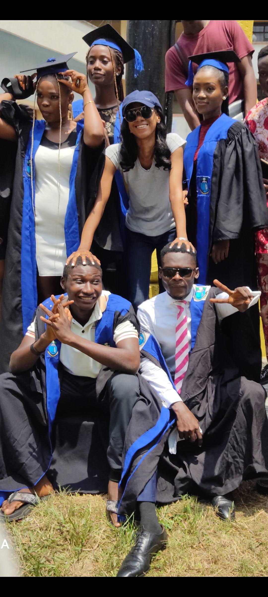

Esther Obisesan

Summary
I am a recent Computer Science graduate with a passion for web development. I am very hardworking and dilligent
Education
- Bachelor of Science, Computer Science- University of Port Harcourt(2020-2024)
Work Experience
- Junior Front-end Developer-Giant GlobalSoft Limited
- Designed and developed a responsive e-learning platform, boosting engagement by 30%.
- Built a user-friendly company website, increasing traffic by 50% and reducing load times by 30%.
- Collaborated with content teams to create interactive simulations, enhancing user understanding by 35%.
- Implemented SEO best practices, increasing organic traffic by 15%.
Skills
- Analytical thinking:
- Problem solving
- Techinical Programming Skills
- Conducting UX research
Awards and Certifications
- ALX Career Essential - Completed an 8-week program in AI-augmented professional skills.
- Elite Global AI - Participated in the Artificial Intelligence Cohort 2.0 course for data and business analytics.
- HCIA-Datacom - Certified in Huawei’s Datacom V1.0 course.
Others
Hobbies
Contact Me